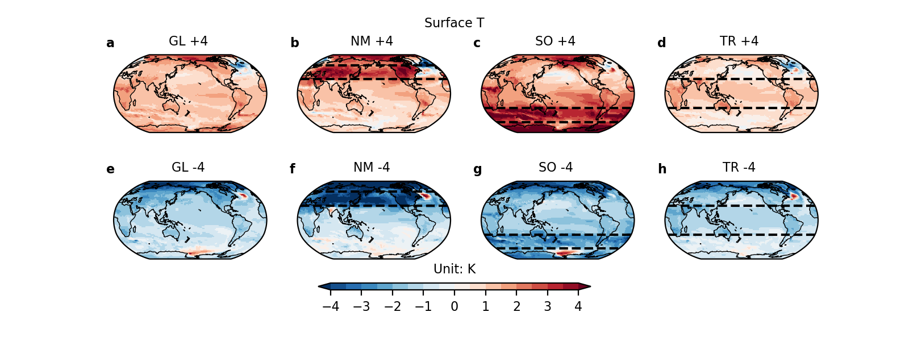
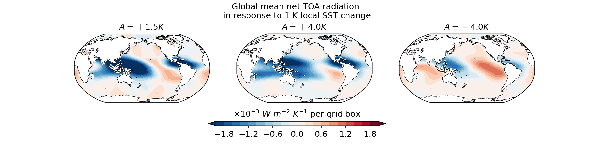
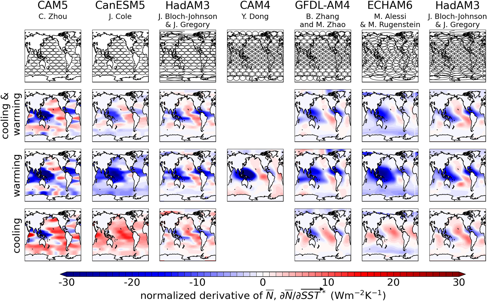
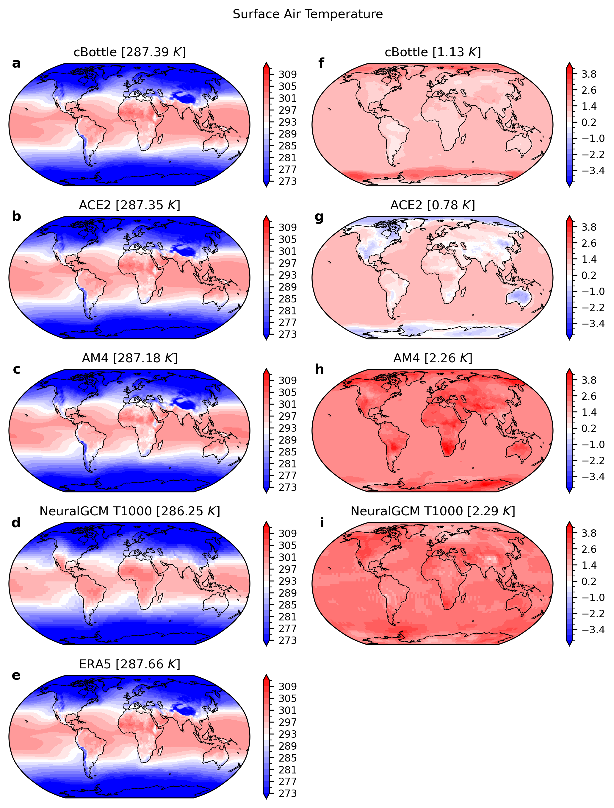

Radiative interactions associated with tropical cyclones
Exploring the coupling between atmospheric radiation and convective processes in tropical cyclones.
Read More
Exploring the coupling between atmospheric radiation and convective processes in tropical cyclones.
Read More
Examining the role of tropopause temperature biases on the development of Tropical Cyclones.
Read More
Understanding the mechanisms behind cloud feedbacks and their impact on climate sensitivity.
Read More
Diagnosing the pattern effect in GFDL AM4 using a Green's Function approach.
Read More
Comparing the Green's Function derived pattern effect across different climate models.
Read MoreNon-linear radiative response to patterned global warming due to convection aggregation.
Read More

Investigating how climate models simulate the daily cycle of rainfall and identifying biases.
Read More
Examining how precipitation patterns are expected to evolve in a warming climate.
Read More